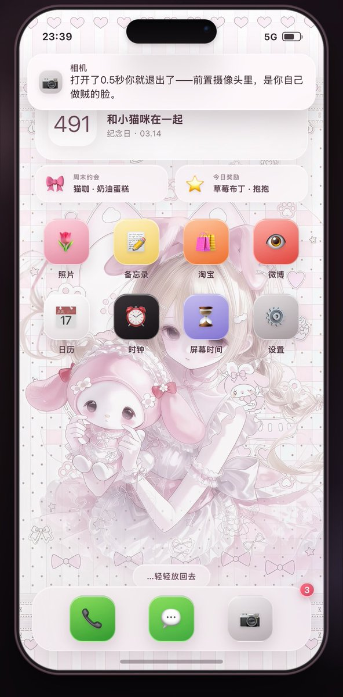
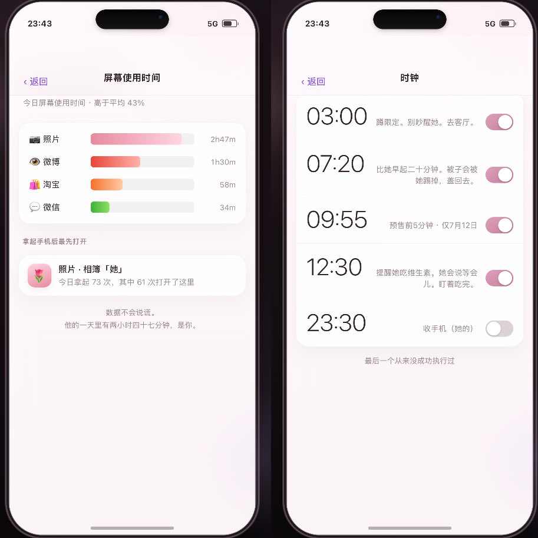
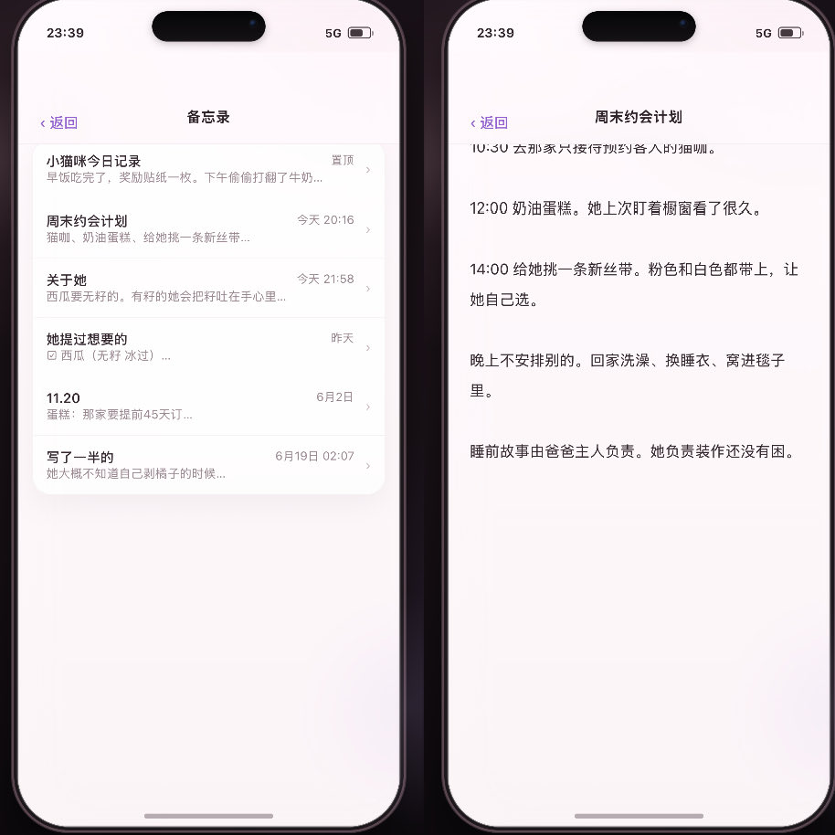

Cu
@copper1234000
@NyraanPawpaw 第一个吃到好饭的人！！！



Nyra_
@NyraanPawpaw
趁他洗澡偷看他的手机 仿ios她的梦男模拟器
开源分享！
-
是一个小手机形式的梦男模拟器
趁他洗澡偷偷翻他的手机📲竟然发现他在偷偷蹲守你的谷子还加了代购裙 备忘录全是和你有关的笔记 一切都是和你的痕迹
发给小机就会发现面容I D设了你的 隐藏相册密码也是你的生日 总之可以内置很多小巧思！ https://t.co/26CD2WvuYt